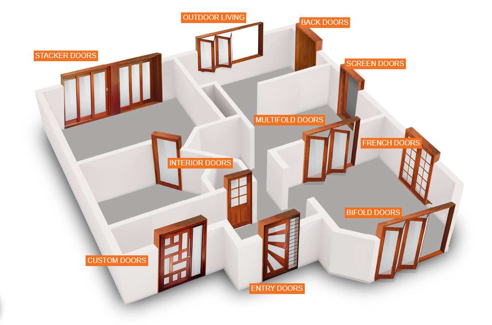
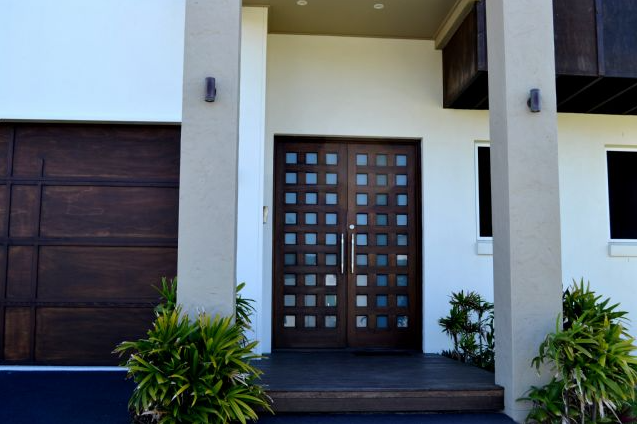
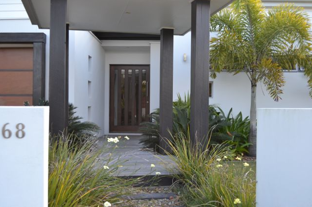
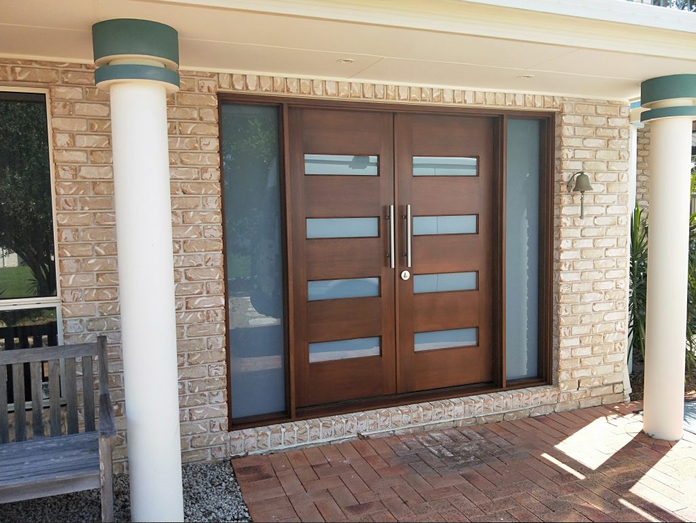

DoorsCentral
We sell doors.
Simple as that. No gimmick, no tricks, quality garanteed.
  About Us
At DoorsCentral, we take pride in being more than just a company that sells doors; we are the architects of entranceways that seamlessly blend style, security, and durability. Our extensive collection showcases a diverse range of doors, from timeless classics to modern marvels, all crafted with precision and an unwavering commitment to quality. Whether you're seeking to make a bold statement with a grand entrance or aiming for subtle sophistication, DoorsCentral is your trusted partner in transforming houses into homes. Step into a realm of endless choices and unparalleled craftsmanship as you embark on a journey with us to redefine your living spaces, one door at a time.
Quality products, fair prices, and great customer service are the reasons that DoorCentral has been able to enjoy such growth – we will always do everything within our power to satisfy our customer’s needs. We also provide staining, delivery and installation services with all of our timber door products to ensure that buying a new door or replacing an old door is as simple and stress-free as possible when visiting DoorCentral.
The process of purchasing one of our solid timber doors for your new home or as part of a renovation is simple – all you need to do is visit one of our four showroom locations based in Ziggsloga and on the Sunshine Coast and the Gold Coast, and we’ll do the rest!
Try to bring some rough measurements of your door openings when you visit – this will make our quoting process quicker and more accurate. Our custom joinery service also means that we can create just about anything for you – so bring in some pictures, sketches or photos of the look and style that you want and if we don’t have it stock then we can make it from scratch for you. Need some inspiration? Check out our gallery pages or to start getting an idea of what you would like.
Once we have the difficult task of selecting one of our door styles out of the way, we will then give you examples of door handles & locks that might be suitable for your every day use. From here, we can discuss some of our optional extras, such as staining & delivery – we offer these services so that you don’t have to worry about hiring a stainer to finish off the job. We are a one-stop-shop for all of your new & solid timber door needs!
Once you have placed your door order you can just sit back and relax while we take care of the rest – we will order in your timber doors and required hardware, get them stained and then organise a suitable time for you for delivery.
Contact Us
Call us at: +6587495125
Or email us at: zeppelinyolo@gmail.com
Opening Hours:
Monday – Thursday 7:30am – 4:00pm
Friday 7:30 – 3:30pm
Saturday 9.00am to 12 noon
Sundays Closed